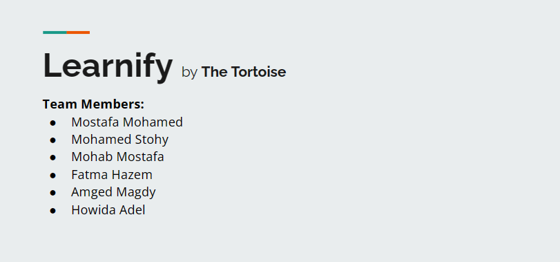
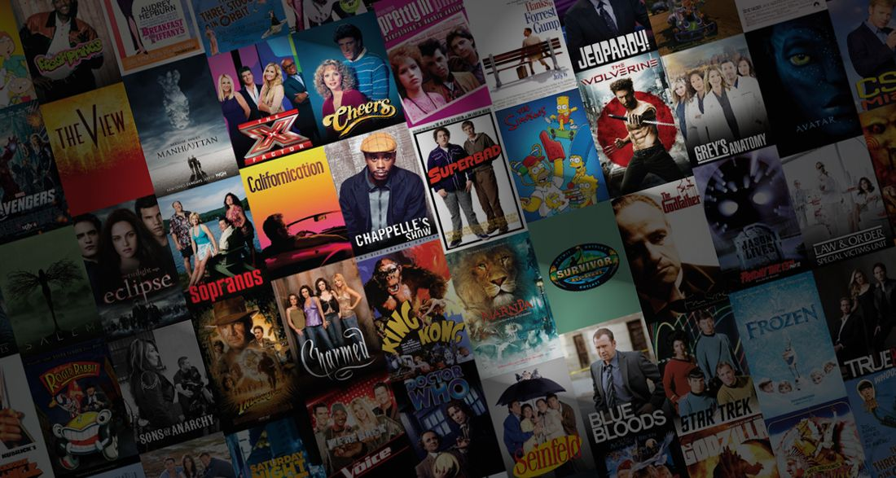
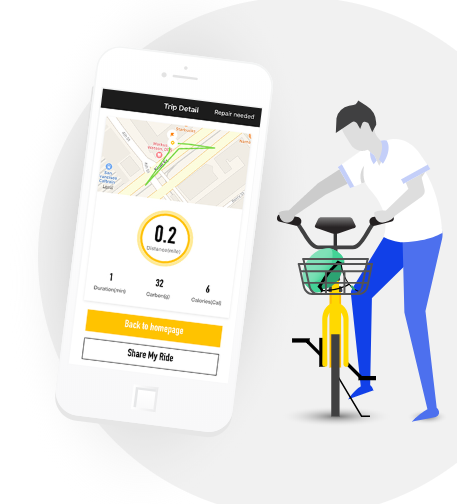

#1
Investigating Medical Appointments
'Using Python'
This project was assigned by FWD-Udacity professional level data analysis course.
The dataset is for about 100,000 patients and we would analyze the patients who aren't showing for their doctor's appointment.
Link for the dataset:
Medical Appointment No Shows | @Kaggle
#3
Explore US Bikeshare Data
'Using Python'

Making use of Python to explore data related to bike share systems for three major cities in the United States—Chicago, New York City, and Washington. Importing the data and answering interesting questions about it by computing descriptive statistics.
'Using SQL'

Covid19 data exploration to find different stats involving the spread of the virus, deaths, vaccinations,etc.., using: Joins, CTE's, Temp Tables, Windows Functions, Aggregate Functions, Creating Views, Converting Data Types.
'Using SQL'

Cleaning data for Housing using SQL, then investigate this data and write queries to prepare data for visualization. Mainly using Joins, Subqueries, Aggregates, Window functions, CTE, temp table, views